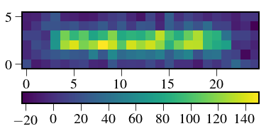
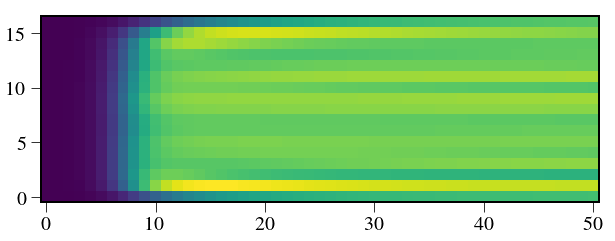
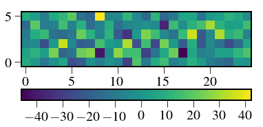

In [1]:
import numpy as np
import scipy as sp
import glob,os
%pylab inline --no-import-all
plt.rc('font', family='serif', serif='Times',size=15)
plt.rc('text', usetex=True)
plt.rc('xtick', labelsize=20)
plt.rc('xtick.major', size=10)
plt.rc('ytick.major', size=10)
plt.rc('ytick', labelsize=20)
plt.rc('axes', labelsize=20)
plt.rc('figure',titlesize=25)
plt.rcParams['image.origin'] = 'lower'
plt.rcParams['image.interpolation'] = 'nearest'
plt.rcParams['axes.linewidth'] = 2.
from astropy.io import fits
import pandas as pd
import logging as log
from crispy.tools.initLogger import getLogger
log = getLogger('main')
from crispy.tools.image import Image
os.chdir('/Users/mrizzo/IFS/crispy/crispy/WFIRST/')
from params import Params
par = Params()
par.hdr
Populating the interactive namespace from numpy and matplotlib
Out[1]:
SIMPLE = T / conforms to FITS standard
BITPIX = 8 / array data type
NAXIS = 0 / number of array dimensions
EXTEND = T
COMMENT
COMMENT ************************************************************
COMMENT ********************** General parameters ******************
COMMENT ************************************************************
COMMENT
NLENS = 108 / # lenslets across array
PITCH = 0.000174 / Lenslet pitch (meters)
INTERLAC= 2.0 / Interlacing
PHILENS = 26.56505117707799 / Rotation angle of the lenslets (deg)
PIXSIZE = 1.3E-05 / Pixel size (meters)
LENSAMP = 0.5 / Lenslet sampling (lam/D)
LSAMPWAV= 660.0 / Lenslet sampling wavelength (nm)
FWHM = 2.0 / FHWM of PSFLet at detector (pixels)
FWHMLAM = 660.0 / Wavelength at which FWHM is defined (nm)
NPIX = 1024 / Number of detector pixels
BW = 0.18 / Bandwidth
PIXPRLAM= 2.0 / Pixels per resolution element
R = 50 / Spectral resolution
In [2]:
lensX=10
lensY=10
from crispy.tools.locate_psflets import PSFLets
from crispy.tools.reduction import get_cutout
polychromeR = fits.open(par.wavecalDir + 'polychromeR%d.fits.gz' % (par.R))
psflets = polychromeR[0].data
psftool = PSFLets()
lamlist = np.loadtxt(par.wavecalDir + "lamsol.dat")[:, 0]
allcoef = np.loadtxt(par.wavecalDir + "lamsol.dat")[:, 1:]
# lam in nm
psftool.geninterparray(lamlist, allcoef)
xlist = []
ylist = []
for lam in lamlist:
_x,_y = psftool.return_locations(lam, allcoef, lensX, lensY)
xlist += [_x]
ylist += [_y]
im = Image(filename = par.wavecalDir + 'polychromeR%dstack.fits.gz' % (par.R))
subim, psflet_subarr, [x0, x1, y0, y1] = get_cutout(im,xlist,ylist,psflets)
for i in range(psflet_subarr.shape[0]):
psflet_subarr[i] /= np.sum(psflet_subarr[i])
crispy - INFO - Read data from HDU 0 of ..//ReferenceFiles/wavecalR50_660/polychromeR50stack.fits.gz
In [33]:
from crispy.tools.reduction import RL,calculateWaveList
lamlist,_ = calculateWaveList(par,method='lstsq')
def calcSNRtotal(Nelec,subim,psflet_subarr,pixnoise=0.,npix=0,Niter=10000,plot=True,indspec=4,vect=None):
#sumpsflets = subim*Nelec+pixnoise+1e-10
N = psflet_subarr.shape[0]
lstsq = np.zeros((N,Niter))
Rvect = np.zeros((N,Niter))
RLvals = np.zeros((N,Niter))
optext = np.zeros((subim.shape[1],Niter))
PSFlet_tool = PSFLets(load=True, infiledir=par.wavecalDir)
xindx = PSFlet_tool.xindx
yindx = PSFlet_tool.yindx
Nmax = PSFlet_tool.nlam_max
i=lensX+54
j=lensY+54
_x = xindx[i, j, :PSFlet_tool.nlam[i, j]]
_y = yindx[i, j, :PSFlet_tool.nlam[i, j]]
_lam = PSFlet_tool.lam_indx[i, j, :PSFlet_tool.nlam[i, j]]
X = _x-y0
X = X[1:-1]
Y = _y-x0
Y = Y[1:-1]
lam = _lam[1:-1]
psflets_flat = np.reshape(psflet_subarr, (psflet_subarr.shape[0], -1))
A = psflets_flat.T
# variance = np.reshape(subim*Nelec+pixnoise+1e-10,-1)
# Ninv = np.linalg.inv(np.diag(variance))
# Cinv = np.dot(np.transpose(A),np.dot(Ninv,A))
# C = np.linalg.inv(Cinv)
# Q = sp.linalg.sqrtm(Cinv)
# s = np.sum(Q,axis=1)
# R = Q/s[np.newaxis,:]
# Ctilde_inv = np.diag(s**2)
# Ctilde = np.dot(np.dot(R,C),R.T)
for j in range(Niter):
# subtract mean of background (assumed known)
# img = np.random.poisson(subim*Nelec)+np.random.poisson(pixnoise,subim.shape)-pixnoise
# Nit = np.amax((subim*Nelec+pixnoise)/0.1).astype(int)
# img = np.zeros_like(subim)
# var = np.zeros_like(subim)
# for h in range(Nit):
# frame = np.random.poisson((subim*Nelec+pixnoise)/Nit.astype(float))
# img+= frame
# var += frame**2
# var /= Nit.astype(float)
# var -= (img/Nit.astype(float))**2
# var*=Nit
# subim_flat = np.reshape(img/np.sqrt(sumpsflets), -1)
# psflets_flat = np.reshape(psflet_subarr, (psflet_subarr.shape[0], -1))
# sumpsflets_flat = np.reshape(sumpsflets,-1)
# vals[:,i] = np.linalg.lstsq(psflets_flat.T/(np.sqrt(sumpsflets_flat[:,np.newaxis])), subim_flat)[0]
# variance = np.reshape(img+pixnoise+1,-1)
# variance = np.reshape(subim*Nelec+pixnoise+1e-10,-1)
# variance = np.reshape(var+1,-1)
img = np.random.poisson(subim*Nelec+pixnoise)
# img -= pixnoise
rl = RL(img,psflets=psflet_subarr,prior=pixnoise)[0]-pixnoise#np.dot(R,RL(img,psflets=psflet_subarr)[0])
RLvals[:,j] = rl
img -= pixnoise
variance = np.reshape(np.sum(psflet_subarr*rl[:,np.newaxis,np.newaxis],axis=0),-1)+pixnoise
# variance = np.reshape(np.sum(psflet_subarr*rl[:,np.newaxis,np.newaxis],axis=0),-1)
Ninv = np.diag(1./(variance+1e-10))
Cinv = np.dot(np.transpose(A),np.dot(Ninv,A))
C = np.linalg.inv(Cinv)
Q = sp.linalg.sqrtm(Cinv)
s = np.sum(Q,axis=0)
R = Q/s[:,np.newaxis]
Ctilde_inv = np.diag(s**2)
x = np.reshape(img,-1)
right = np.dot(np.transpose(A),np.dot(Ninv,x))
f = np.dot(C,right)
# lstsq[:,j] = np.dot(C,right)#np.dot(R,f)
lstsq[:,j] = np.dot(R,f)
RLvals[:,j] = np.dot(R,RLvals[:,j])
Rvect[:,j] = np.dot(R,vect)
# RLvals[:,j] = np.dot(R,RL(img,psflets=psflet_subarr)[0])
spec = np.zeros(subim.shape[1])
sig = 2./2.35*lam/par.FWHMlam
y = np.mean(Y)
# for i in range(img.shape[1]):
# weights = np.exp(-(np.arange(img.shape[0])-y)**2/2./sig[i]**2)/sig[i]/np.sqrt(2.*np.pi)
# optext[i,j] = np.sum(img[:,i]*weights)/np.sum(weights**2)
estSNRlstsq = np.mean(lstsq,axis=1)/np.std(lstsq,axis=1)
estSNRRL = np.mean(RLvals,axis=1)/np.std(RLvals,axis=1)
# estSNROptExt = np.mean(0.5*(optext[13,:]+optext[14,:]))/np.std(0.5*(optext[13,:]+optext[14,:]))
if plot:
plt.figure()
plt.imshow(img+pixnoise)
plt.colorbar(orientation='horizontal')
plt.figure()
plt.imshow(img-np.reshape(np.dot(A,np.dot(R,f)),subim.shape))
plt.colorbar(orientation='horizontal')
plt.figure()
lamlist,_ = calculateWaveList(par,method='lstsq')
plt.plot(lamlist,lstsq[:,-1])
plt.plot(lamlist,RLvals[:,-1])
# lamlist,_ = calculateWaveList(par,method='optext')
# scale = np.mean(RLvals[:,-1])/np.mean(optext[4:-4,-1])
# plt.plot(lamlist,scale*optext[3:-3,-1])
# print np.mean(RLvals[:,-1]),np.mean(optext[4:-4,-1])
SNR = Nelec/(np.sqrt(Nelec+npix*pixnoise))
print "Expected SNR:",SNR
print "Estimated SNR lstsq:",estSNRlstsq[indspec]
print "Estimated SNR RL:",estSNRRL[indspec]
if vect is not None:
varray = np.array(vect)+1e-10
fchi2 = Rvect[:,-1]
plt.figure()
plt.plot(lamlist,fchi2)
plt.plot(lamlist,lstsq[:,-1])
plt.plot(lamlist,RLvals[:,-1])
# print "MSE lstsq:",np.sum((estSNRlstsq-fchi2)**2)/np.sum(fchi2**2)
# print "MSE RL:",np.sum((estSNRRL-fchi2)**2)/np.sum(fchi2**2)
print "MSE lstsq:",np.mean(np.sum((lstsq-Rvect)**2,axis=0)/np.sum(Rvect**2,axis=0))
print "MSE RL:",np.mean(np.sum((RLvals-Rvect)**2,axis=0)/np.sum(Rvect**2,axis=0))
# print "MSRE lstsq normalized:",np.std((estSNRlstsq-varray)/varray)
# print "MSRE RL normalized:",np.std((estSNRRL-varray)/varray)
# print "Estimated SNR OptExt:",estSNROptExt
print "Expected mean:",np.mean(Rvect[:,indspec])
print "Estimated mean lstsq:",np.mean(lstsq,axis=1)[indspec]
print "Estimated mean RL:",np.mean(RLvals,axis=1)[indspec]
print pd.DataFrame(R)
print np.sum(R,axis=0)
print R[0],np.sum(R[0])
# print "Estimated mean:",np.mean(0.5*(optext[13,:]+optext[14,:]))
return estSNRlstsq,estSNRRL#,estSNROptExt
crispy - INFO - Reduced cube will have 17 wavelength bins
In [34]:
print psflet_subarr.shape[0]
17
In [35]:
# subim = np.sum(psflet_subarr,axis=0)
# vect = np.array([1,0,0,0,1,0,0,0,1,0,0,0,1,0,0,0,1])
vect = np.ones(psflet_subarr.shape[0])
# vect = np.array([1,0,0,0,1,0,0,0,1,0,0,0,0,1,0,0,0])
subim = np.sum(psflet_subarr*vect[:,np.newaxis,np.newaxis],axis=0)
Nelec = 300
calcSNRtotal(Nelec=Nelec,
subim=subim,
psflet_subarr=psflet_subarr,
pixnoise=100,
npix=4.5,
plot=True,
Niter=1000,
indspec=8,
vect = Nelec*vect)
crispy - INFO - Reduced cube will have 17 wavelength bins
Expected SNR: 10.9544511501
Estimated SNR lstsq: 11.6886334469
Estimated SNR RL: 16.7906006169
MSE lstsq: 0.00765146847094
MSE RL: 0.0665005313014
Expected mean: 300.0
Estimated mean lstsq: 299.655548471
Estimated mean RL: 325.289103542
0 1 2 3 4 5 \
0 7.016058e-01 0.272017 2.496640e-02 0.001827 -6.091911e-04 0.000286
1 2.252866e-01 0.513718 2.398145e-01 0.019955 1.694814e-03 -0.000732
2 2.016116e-02 0.233827 4.908468e-01 0.232227 2.121559e-02 0.002250
3 1.476177e-03 0.019467 2.323483e-01 0.487847 2.365937e-01 0.021125
4 -5.028568e-04 0.001689 2.168634e-02 0.241717 4.799513e-01 0.231625
5 2.389993e-04 -0.000739 2.330771e-03 0.021868 2.346867e-01 0.476061
6 -1.211733e-04 0.000377 -7.710773e-04 0.001553 2.254688e-02 0.233465
7 6.076222e-05 -0.000178 3.383411e-04 -0.000576 1.446549e-03 0.025931
8 -3.075625e-05 0.000088 -1.664365e-04 0.000283 -4.690634e-04 0.001859
9 1.609948e-05 -0.000046 8.895664e-05 -0.000158 2.899090e-04 -0.000546
10 -8.238925e-06 0.000025 -4.912429e-05 0.000089 -1.552708e-04 0.000258
11 6.226711e-06 -0.000014 2.769083e-05 -0.000049 8.231002e-05 -0.000133
12 -2.086627e-06 0.000010 -1.572382e-05 0.000028 -4.604338e-05 0.000076
13 1.778345e-06 -0.000004 1.135780e-05 -0.000015 2.625790e-05 -0.000044
14 -9.891378e-07 0.000003 -3.689084e-06 0.000011 -1.321073e-05 0.000024
15 7.978713e-07 -0.000001 2.585030e-06 -0.000002 1.045422e-05 -0.000010
16 1.846644e-06 0.000001 -8.902447e-07 0.000002 2.159613e-07 0.000010
6 7 8 9 10 11 12 \
0 -0.000148 0.000074 -0.000037 0.000019 -0.000010 0.000007 -0.000002
1 0.000380 -0.000179 0.000087 -0.000045 0.000024 -0.000014 0.000010
2 -0.000758 0.000332 -0.000161 0.000085 -0.000047 0.000027 -0.000015
3 0.001527 -0.000566 0.000274 -0.000151 0.000085 -0.000047 0.000026
4 0.022656 0.001451 -0.000463 0.000282 -0.000152 0.000081 -0.000045
5 0.237699 0.026357 0.001860 -0.000538 0.000255 -0.000133 0.000074
6 0.478525 0.237100 0.025978 0.001604 -0.000395 0.000213 -0.000124
7 0.237499 0.473234 0.233627 0.027335 0.001495 -0.000358 0.000235
8 0.026437 0.237358 0.469070 0.235796 0.028531 0.001609 -0.000531
9 0.001657 0.028189 0.239344 0.464048 0.235839 0.029401 0.002074
10 -0.000406 0.001537 0.028863 0.235049 0.457603 0.242543 0.033116
11 0.000216 -0.000364 0.001609 0.028973 0.239819 0.456978 0.238559
12 -0.000128 0.000242 -0.000539 0.002074 0.033236 0.242147 0.451639
13 0.000077 -0.000143 0.000251 -0.000326 0.001855 0.033554 0.241800
14 -0.000041 0.000069 -0.000114 0.000196 -0.000419 0.002147 0.033489
15 0.000019 -0.000031 0.000054 -0.000103 0.000193 -0.000254 0.001647
16 -0.000004 0.000012 -0.000021 0.000039 -0.000060 0.000090 -0.000257
13 14 15 16
0 0.000002 -0.000001 9.129225e-07 1.731029e-06
1 -0.000004 0.000003 -1.310781e-06 9.126340e-07
2 0.000011 -0.000003 2.388505e-06 -6.738917e-07
3 -0.000014 0.000010 -2.304908e-06 1.269262e-06
4 0.000025 -0.000013 9.873777e-06 1.671044e-07
5 -0.000043 0.000023 -9.429968e-06 7.632667e-06
6 0.000073 -0.000039 1.757012e-05 -2.864469e-06
7 -0.000135 0.000066 -2.934950e-05 9.417480e-06
8 0.000242 -0.000111 5.188773e-05 -1.668890e-05
9 -0.000319 0.000193 -1.003782e-04 3.070260e-05
10 0.001810 -0.000413 1.863526e-04 -4.767441e-05
11 0.032371 0.002090 -2.426775e-04 7.037176e-05
12 0.236783 0.033100 1.600009e-03 -2.043275e-04
13 0.447927 0.236844 3.593331e-02 2.250809e-03
14 0.234655 0.445920 2.440809e-01 3.999765e-02
15 0.036232 0.248404 4.709357e-01 2.429031e-01
16 0.002770 0.049687 2.964920e-01 6.512387e-01
[ 0.94819014 1.04024087 1.01145501 1.00660441 0.99725184 0.99150546
1.00520906 1.00467251 0.99968199 0.99433546 0.99785452 1.00798915
1.00169584 0.99238665 1.01576137 1.04892546 0.93624026]
[ 7.01605792e-01 2.72016870e-01 2.49664037e-02 1.82705702e-03
-6.09191110e-04 2.85761248e-04 -1.47509308e-04 7.38442251e-05
-3.67905657e-05 1.89727370e-05 -9.74196940e-06 7.44629072e-06
-2.45835103e-06 2.05168335e-06 -1.15181680e-06 9.12922465e-07
1.73102876e-06] 1.0
Out[35]:
(array([ 10.48751355, 12.33784348, 11.80319238, 12.04644225,
12.11889784, 11.70569059, 11.55916811, 11.48960752,
11.68863345, 11.55947014, 11.28047687, 11.4683224 ,
11.58073269, 11.28273223, 11.18729911, 11.19171727, 10.20629886]),
array([ 19.48336125, 15.13514426, 16.47342416, 16.15816381,
17.12858255, 16.25355986, 16.38721717, 16.10238542,
16.79060062, 16.54268192, 16.35816245, 16.70976778,
17.09393987, 16.33931067, 17.18131083, 14.79816497, 23.43333729]))



Study of the RL algorithm with prior¶
In [64]:
pixnoise = 200
vect = np.ones(psflet_subarr.shape[0])
# vect = np.array([1,2,1,2,1,2,1,2,1,2,1,2,2,1,2,2,1])
subim = np.sum(psflet_subarr*vect[:,np.newaxis,np.newaxis],axis=0)
Nelec = 1000
img = np.random.poisson(subim*Nelec+pixnoise)
plt.imshow(img)
plt.colorbar(orientation='horizontal')
Out[64]:
<matplotlib.colorbar.Colorbar at 0x1c1ab52d90>

In [65]:
from crispy.tools.reduction import RL,calculateWaveList
val,vallist,loglist,count = RL(img,psflets=psflet_subarr,prior=pixnoise,guess=vect,niter=50)
print vallist.shape
(51, 17)
In [66]:
plt.figure(figsize=(10,5))
plt.imshow(vallist.T)
Out[66]:
<matplotlib.image.AxesImage at 0x1c1abbee50>

In [67]:
plt.plot(val)
print np.mean(val)
999.740798919

In [68]:
psflets_flat = np.reshape(psflet_subarr, (psflet_subarr.shape[0], -1))
plt.imshow(img-np.reshape(np.dot(psflets_flat.T,val),img.shape)-pixnoise)
plt.colorbar(orientation='horizontal')
Out[68]:
<matplotlib.colorbar.Colorbar at 0x1c1adfc090>
